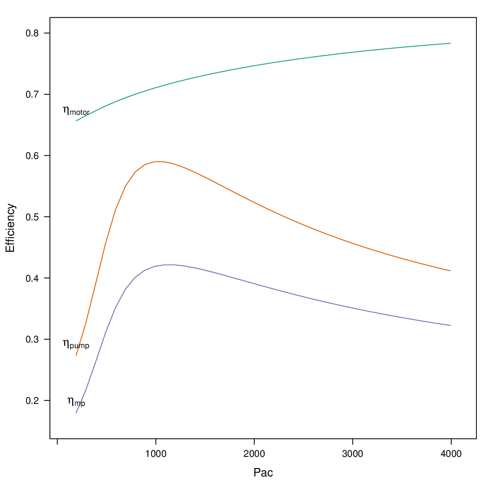
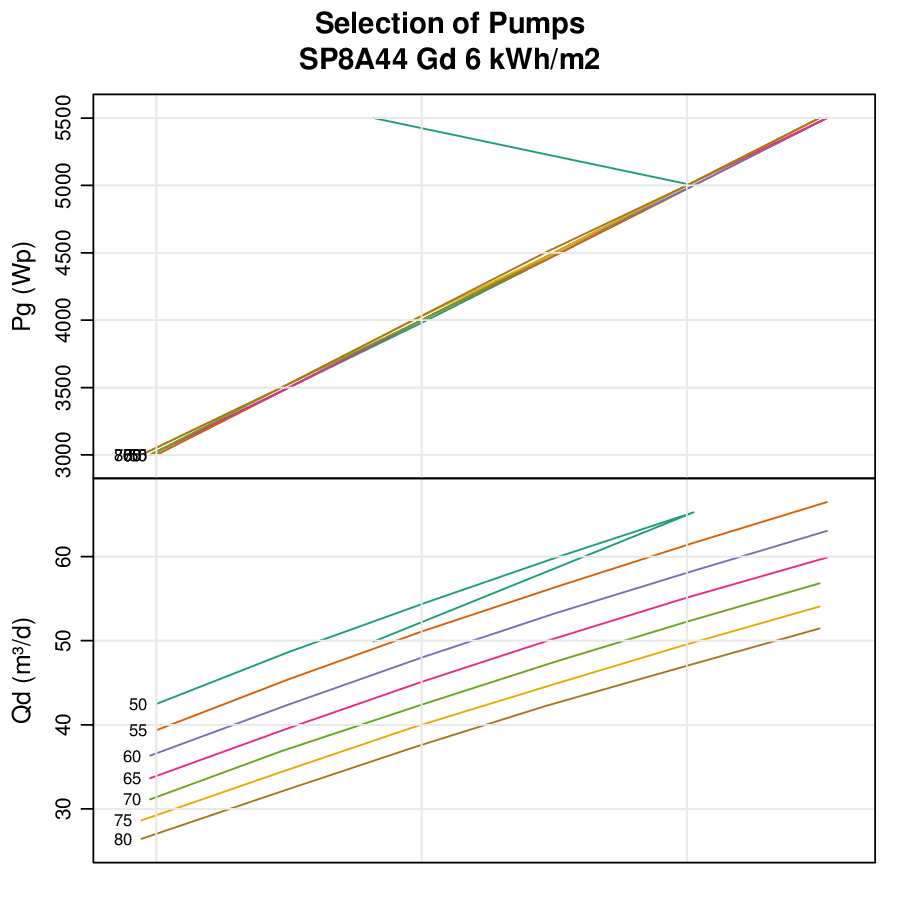

solaR: Solar Radiation and Photovoltaic Systems with R
Table of Contents
1 Introduction
The solaR package includes a set of functions to calculate
the solar radiation incident on a photovoltaic generator and simulate the
performance of several applications of the photovoltaic energy.
This package performs the whole calculation procedure from both daily and
intradaily global horizontal irradiation to the final productivity of
grid connected PV systems and water pumping PV systems.
The package stands on a set of S4 classes. The core of each
class is a group of slots with yearly, monthly, daily and intradaily
multivariate time series (with the zoo package
). The classes share a variety of
methods to access the information (for example, as.zooD
provides a zoo object with the daily multivariate time series of
the corresponding object) and several visualisation methods based on
the lattice and latticeExtra
packages. The next figure
shows the classes and their relationships. Each frame contains the
name of the class and its constructor function:
Sol: sun geometry. It is created withcalcSol.Meteo: meteorological data. It can be created with several functions:readSIAR,zoo2Meteo, etc.G0: horizontal irradiation and irradiance (contains classesMeteoandSol). It is created withcalcG0.Gef: effective irradiation and irradiance (contains classG0). It is created withcalcGef.ProdGCPV: performance of a Grid Connected Photovoltaic System (GCPV) (contains classGef). It is created withprodGCPV.ProdPVPS: performance of a Photovoltaic Pumping System (contains classGef). It is created withprodPVPS.Shade: shadows in a GCPV system (contains classProdGCPV). It is created withoptimShd.
Besides, solaR includes a tool for the visual statistical analysis of
the performance of a large PV plant composed of several systems.

The development version can be found at R-Forge and the stable version is at CRAN.
This book (in Spanish) contains detailed information about solar radiation and photovoltaic systems.
I usually publish news and examples about solaR at this blog.
2 Solar Geometry
The apparent movement of the Sun is defined with a set of equations
included in the functions fSolD and
fSolI. fSolD computes the daily apparent movement of
the Sun from the Earth. This movement is mainly described (for the
simulation of photovoltaic systems) by the declination angle, the
sunset angle and the daily extra-atmospheric irradiation. On the
other hand, fSolI computes the angles which describe the
intradaily apparent movement of the Sun from the Earth.
Besides, the function fBTd generates time bases with
different structures. For example, the so called
``monthly average days'' (commonly used when only 12 monthly averages
of daily global radiation are available) are obtained with
fBTd(mode = 'prom'). The azimuth and height solar angles during
these days are displayed in the next figure.
lat = 37.2 SolD <- fSolD(lat, BTd = fBTd(mode = "prom")) SolI <- fSolI(SolD, sample = "10 min", keep.night = FALSE) mon = month.abb p <- xyplot(r2d(AlS) ~ r2d(AzS), groups = month, data = SolI, type = "l", col = "black", xlab = expression(psi[s]), ylab = expression(gamma[s])) p + glayer({ idx <- round(length(x)/2 + 1) panel.text(x[idx], y[idx], mon[group.value], pos = 3, offset = 0.2, cex = 0.8) })

solaR provides four methods for the sun geometry calculations. These
methods are named as 'cooper' , 'spencer', 'michalsky' (default) and
'strous':
lat=37.2 BTd=fBTd(mode='serie') solStrous <- fSolD(lat, BTd, method='strous') solSpencer <- fSolD(lat, BTd, method='spencer') solCooper <- fSolD(lat, BTd, method='cooper') solMichalsky <- fSolD(lat, BTd, method='michalsky') decDif <- solMichalsky$decl - cbind(solStrous$decl, solSpencer$decl, solCooper$decl) names(decDif) <- c('strous', 'spencer', 'cooper')

These functions are included in a function, calcSol.
It constructs an object of class Sol containing in
its slots the zoo objects created by fSolD and
fSolI.
3 Solar Radiation
Values of global horizontal irradiation are commonly available either as monthly averages of daily values or as a time series of daily values during one or several years. The analysis of the performance of a PV system starts from the transformation of the global horizontal irradiation to global, diffuse and direct horizontal irradiance and irradiation, and then irradiance and irradiation on the generator surface.
3.1 Irradiation and irradiance on the horizontal plane
The function fCompD extracts the diffuse and direct components
from the daily global irradiation on a horizontal surface by means of
regressions between the clearness index and the diffuse fraction
parameters. This function need the results from fSolD, a set
of values of global horizontal irradiation (Wh/m²), and the correlation between the
clearness index and the diffuse fraction.
solaR includes predefined correlations for monthly means of
daily values, for daily values
and for intradaily values. Besides, the
user may define a particular correlation through the argument
f.
BTd = fBTd(mode = "serie") SolD <- fSolD(lat, BTd[100]) SolI <- fSolI(SolD, sample = "hour") G0d = zoo(5000, index(SolD)) fCompD(SolD, G0d, corr = "Page") Fd Ktd G0d D0d B0d 2011-04-10 0.4123 0.5201 5000 2062 2938 fCompD(SolD, G0d, corr = "CPR") Fd Ktd G0d D0d B0d 2011-04-10 0.5658 0.5201 5000 2829 2171
The daily profile of the irradiance is obtained with the function
fCompI. This function needs the information provided by
fCompD and fSolI, or calcSol. For example,
the profiles for the ``monthly average days'' are obtained with the next code:
sol <- calcSol(lat, fBTd(mode = "prom"), sample = "hour", keep.night = FALSE) G0dm = c(2.766, 3.491, 4.494, 5.912, 6.989, 7.742, 7.919, 7.027, 5.369, 3.562, 2.814, 2.179) * 1000 Ta = c(10, 14.1, 15.6, 17.2, 19.3, 21.2, 28.4, 29.9, 24.3, 18.2, 17.2, 15.2) BD <- readG0dm(G0dm = G0dm, Ta = Ta, lat = 37.2) compD <- fCompD(sol, BD, corr = "Page") compI <- fCompI(sol, compD)

3.2 Meteorological data
There are several functions to construct a Meteo object with
radiation and temperature data. For daily data, the functions
readBD and df2Meteo are recommended if it is stored in a
local file or a data.frame, while readG0dm is indicated
when only 12 monthly averages are available. The correspondent
functions for intradaily data are readBDi and
dfI2Meteo. Besides, zoo2Meteo can construct a
Meteo object from a zoo object both for daily and
intradaily data.
For example, the helios dataset included in the package,
obtained from http://helios.ies-def.upm.es, can be converted to
a Meteo object with the next code:
data("helios") names(helios) = c("date", "G0", "TempMax", "TempMin") bd = df2Meteo(helios, dates.col = "date", lat = 41, source = "helios-IES", format = "%Y/%m/%d") bd Object of class Meteo Source of meteorological information: bd-helios-IES Latitude of source: 41 degrees Meteorological Data: Index G0 TempMax TempMin Min. :2009-01-01 00:00:00 Min. : 326 Min. : 1.41 Min. :-37.50 1st Qu.:2009-04-08 12:00:00 1st Qu.: 2523 1st Qu.:14.41 1st Qu.: 1.95 Median :2009-07-07 00:00:00 Median : 4746 Median :23.16 Median : 7.91 Mean :2009-07-04 21:29:54 Mean : 4812 Mean :22.59 Mean : 5.32 3rd Qu.:2009-10-03 12:00:00 3rd Qu.: 7140 3rd Qu.:31.06 3rd Qu.: 15.11 Max. :2009-12-31 00:00:00 Max. :11254 Max. :38.04 Max. : 24.80
On the other hand, the function readSIAR is able to download
the meteorological data available at http://www.marm.es/siar. This
web page provides daily measurements from a set of agroclimatic
stations located in Spain (next figure). This function needs
the code of the station and its province, and the start and end
date. The number codes of the stations and provinces are available here:
SIAR <- read.csv('http://solar.r-forge.r-project.org/data/SIAR.csv') proj <- CRS('+proj=longlat +ellps=WGS84') spSIAR <- SpatialPointsDataFrame(SIAR[, c(6, 7)], SIAR[, -c(6, 7)], proj4str=proj) ###download a shapefile with the administrative borders of Spain old <- setwd(tempdir()) download.file('http://www.gadm.org/data/shp/ESP_adm.zip', 'ESP_adm.zip') unzip('ESP_adm.zip') mapaSHP <- readShapeLines('ESP_adm2.shp', proj4string=proj) setwd(old) p <- spplot(spSIAR['Comunidad'], col.regions=brewer.pal(n=12, 'Paired'), key.space='right', scales=list(draw=TRUE), type=c('p','g')) p + layer(sp.lines(mapaSHP)) }

readSIAR constructs an object of class Meteo. The
raw data is obtained with the method getData. If only the
irradiation series is needed, the method getG0 is
recommended. Both methods provide a zoo object.
For example, the 2009 data from the station at Aranjuez is displayed
in the next figure.
Aranjuez <- readSIAR(28, 3, "01/01/2009", "31/12/2009") xyplot(G0 ~ TempMedia | month, data = Aranjuez, type = c("p", "r"))
It is important to note that the radiation
measurements available at the web page are in
MJ/m², but readSIAR converts
the values to Wh/m²:

The SIAR network includes information of maximum and minimum values of
temperature. The function fTemp calculates a profile of the
ambient temperature with this information. The evolution of this synthetic
time series of temperature during March is displayed in the next figure.
lat = 41 sol = calcSol(lat, BTd = indexD(Aranjuez), sample = "hour") Temp <- fTemp(sol, Aranjuez) wTemp = window(Temp, start = as.POSIXct("2009-03-01"), end = as.POSIXct("2009-03-31")) xyplot(wTemp, col = "black", ylab = "T") + layer_(panel.xblocks(x, DoY, col = c("lightgray", "white")))

3.3 The function calcG0
The previous steps are included in the function calcG0, the
constructor of the class G0. For example, with the next code,
the components of horizontal irradiation and irradiance are obtained
from the measurements of the meteorological station of Aranjuez
(next figure).
g0 <- calcG0(lat = 37.2, modeRad = "siar", dataRad = list(prov = 28, est = 3, start = "01/01/2009", end = "31/12/2009"))

solaR accepts intradaily irradiation data sources. For example, the La Ola - Lanai= station at Hawaii
from the Measurement and Instrumentation Data Center of the NREL
(NREL-MIDC) provides meteorological data with 1-minute sampling rate\footnote{The data for
the example are available here.
The local data logger program runs using Greenwich Mean Time (GMT), and
data is converted to Hawaiian Standard Time (HST) after data
collection. The function local2Solar calculates the Mean Solar
Time of the index. Besides, the horizontal direct irradiation is
obtained, since it is not included in the file.
lat = 20.77 lon = -156.9339 dat <- read.zoo(file, col.names = c("date", "hour", "G0", "B", "D0", "Ta"), index = list(1, 2), FUN = function(d, h) as.POSIXct(paste(d, h), format = "%m/%d/%Y %H:%M", tz = "HST"), FUN2 = function(x) local2Solar(x, lon), header = TRUE, sep = ",") dat$B0 <- dat$G0 - dat$D0
Finally, the object Meteo is obtained with zoo2Meteo:
NRELMeteo <- zoo2Meteo(dat, lat = lat, source = "NREL-La Ola-Lanai")

With this data, a G0 object can be calculated. Since both
diffuse and direct components are available, no correlation is needed (corr='none'):
g0NREL <- calcG0(lat = lat, modeRad = "bdI", dataRad = NRELMeteo, corr = "none")
If these components were not available, a fd-kt hourly correlation is needed :
g0BRL <- calcG0(lat = lat, modeRad = "bdI", dataRad = NRELMeteo, corr = "BRL")
3.4 Irradiation and irradiance on the generator plane
The solar irradiance incident on an inclined surface can be calculated from the direct and diffuse irradiance on a horizontal surface, and from the evolution of the angles of the Sun and the surface. The transformation of the direct radiation is straightforward since only geometric considerations are needed. However, the treatment of the diffuse irradiance is more complex since it involves the modelling of the atmosphere.
There are several models for the estimation of diffuse irradiance on an inclined surface. The proposal of Hay and McKay combines simplicity and acceptable results. This model divides the diffuse component in isotropic and anisotropic whose values depends on a anisotropy index.
On the other hand, the effective irradiance —the fraction of the incident irradiance that reaches the cells inside a PV module— is calculated with the losses due to the angle of incidence and dirtiness. This behaviour can be simulated with a model proposed by Martin and Ruiz requiring information about the angles of the surface and the level of dirtiness.
The orientation, azimuth and incidence angle are calculated from the
results of fSolI or calcSol with the functions
fTheta and fInclin. These functions can estimate
the geometry and irradiance for fixed systems, and two-axis and
horizontal North-South trackers. Besides, the movement of a horizontal NS
tracker due to the backtracking strategy
can be calculated with information about the tracker and the distance
between the trackers included in the system.
Both functions are integrated in calcGef, which constructs an
object of class Gef.
For example, with the results of calcG0, the
irradiance and irradiation on a fixed surface can be estimated. The next figure
shows the relation between the effective and
incident irradiance versus the cosine of the angle of incidence for
this system.
gef <- calcGef(lat = 37.2, modeRad = "prev", dataRad = g0, beta = 30) xyplot(Gef/G ~ cosTheta | month, data = gef, type = c("p", "smooth"), cex = 0.4, alpha = 0.5)

The next lines of code calculate the movement of a N-S horizontal axis
tracker with backtracking (modeShd='bt') and whose
inclination angle is limited to 60 degrees (betaLim=60). The
evolution of the inclination angle is displayed in the next figure.
The meaning of the distances and
struct arguments will be detailed here.
structHoriz = list(L = 4.83) distHoriz = data.frame(Lew = structHoriz$L * 4, H = 0) gefBT = calcGef(lat = 37.2, dataRad = prom, sample = "10 min", modeTrk = "horiz", modeShd = "bt", betaLim = 60, distances = distHoriz, struct = structHoriz)

4 Productivity of a Grid Connected PV System
The function fProd
simulates the performance of a Grid Connected PV (GCPV) system under
certain irradiance and temperature conditions. The system is defined
with a set of parameters: characteristics of the PV
module (module) and the inverter (inverter), the electrical arrangement of the PV
generator (generator) and the losses of the system (effSys).
For example, the electrical power, voltage and current of a certain PV system is calculated with:
inclin = data.frame(Gef = c(200, 400, 600, 800, 1000), Ta = 25) fProd(inclin) Gef Ta Tc Voc Isc Vmpp Impp Vdc Idc Pac Pdc EffI 1 200 25 31.75 673.3 10.34 533.1 9.586 533.1 9.586 4212 4737 0.9164 2 400 25 38.50 655.4 20.68 516.3 19.090 516.3 19.090 8275 9137 0.9334 3 600 25 45.25 637.5 31.02 499.6 28.506 499.6 28.506 11972 13202 0.9346 4 800 25 52.00 619.7 41.36 483.0 37.824 483.0 37.824 15323 16936 0.9325 5 1000 25 58.75 601.8 51.70 466.5 47.037 466.5 47.037 18342 20342 0.9293
First, fProd computes the Maximum Power Point (MPP) of the
generator (Vmpp and Impp) at the irradiance and
ambient temperature conditions contained in Inclin. Next, it
checks that this point is inside the MPP window of the inverter, as
defined by inverter$Vmin and inverter$Vmax. If
the MPP value is outside this range, the function assigns the limit
value to the voltage, and calculates the correspondent current value
with a warning.
Anyway, the inverter input voltage and current are Vdc e
Idc. With the next code, the Vdc value is
set to Vmin (the minimum value of the MPP window of the
inverter), 420V, since Vmpp is below this value.
inclin = data.frame(Gef = 800, Ta = 30)
gen1 = list(Nms = 10, Nmp = 11)
inv1 = list(Ki = c(0.01, 0.025, 0.05), Pinv = 25000, Vmin = 420,
Vmax = 750, Gumb = 20)
prod = fProd(inclin, generator = gen1, inverter = inv1)
print(prod)
Gef Ta Tc Voc Isc Vmpp Impp Vdc Idc Pac Pdc EffI
1 800 30 57 505.3 41.36 392.3 37.68 420 33.83 11943 13169 0.9346
For this configuration, the losses due to the voltage limitation are:
with(prod, Vdc * Idc/(Vmpp * Impp)) 0.961
The function prodGCPV integrates the calculation procedure of
irradiation, irradiance and simulation of the GCPV system. It
constructs an object of class ProdGCPV.
The next code computes the productivity of the previous GCPV system
working as fixed, NS horizontal axis tracking and two-axis tracking
systems. The parameters of the generator, module, inverter and rest
of the system are those by default in prodGCPV.
ProdFixed <- prodGCPV(lat = lat, dataRad = prom, keep.night = FALSE) Prod2x <- prodGCPV(lat = lat, dataRad = prom, modeTrk = "two", keep.night = FALSE) ProdHoriz <- prodGCPV(lat = lat, dataRad = prom, modeTrk = "horiz", keep.night = FALSE)
4.1 Merging daily solar time series
The mergesolaR method is designed to merge daily time series
of several solaR objects.
The next example retrieves the daily irradiation of the whole set of
meteorological stations of Madrid (Spain) and use this information to
calculate the productivity of a grid connected PV system with the
lapply and prodGCPV functions. The result is a list of
ProdGCPV objects. In order to prevent from the erroneous
behaviour of some stations, the code includes the use of try:
EstMadrid <- subset(SIAR, Provincia == "Madrid") nEstMadrid <- nrow(EstMadrid) namesMadrid <- EstMadrid$Estacion prodMadrid <- lapply(1:nEstMadrid, function(x) { try(prodGCPV(lat = 41, modeRad = "siar", dataRad = list(prov = 28, est = x, start = "01/01/2009", end = "31/12/2010"))) }) names(prodMadrid) <- namesMadrid okMadrid <- lapply(prodMadrid, class) != "try-error" prodMadrid <- prodMadrid[okMadrid] YfMadrid <- do.call(mergesolaR, prodMadrid)
mergesolaR with a set of ProdGCPV objects merges
the daily time series of the Yf variable of each object. The
result is a multivariate zoo object where each column is the
daily productivity with the radiation data of each meteorological
station. It can be displayed (for example) with the
horizonplot function. This
result will be revisited with the TargetDiagram tool.
horizonplot(YfMadrid - rowMeans(YfMadrid), origin = 0,
scales = list(y = list(relation = "same")), colorkey = TRUE))

4.2 Shadows
The shadows on PV generators alter the performance of the PV
generators and reduce their productivity. This
package includes functions for the estimation of mutual shadows
between generators belonging to the same system. fSombra2X,
fSombraHoriz, fSombraEst, calculate the shadows in
two-axis, horizontal axis and fixed systems, respectively. The
function fSombra6 is indicated for groups of two-axis
trackers. Finally, fSombra is a wrapper to the previous
functions. These functions are integrated in calcShd,
calcGef and prodGCPV, as these examples show.
First, the dimensions of the support structures (struct) and
the distances between them (distances) have to be defined.
With a two-axis tracking system:
struct2x = list(W = 23.11, L = 9.8, Nrow = 2, Ncol = 8) dist2x = data.frame(Lew = 40, Lns = 30, H = 0) prod2xShd <- prodGCPV(lat = lat, dataRad = prom, modeTrk = "two", modeShd = "area", struct = struct2x, distances = dist2x)
Then, a N-S horizontal axis tracking system without backtracking,
structHoriz = list(L = 4.83) distHoriz = data.frame(Lew = structHoriz$L * 4, H = 0) prodHorizShd <- prodGCPV(lat = lat, dataRad = prom, sample = "10 min", modeTrk = "horiz", modeShd = "area", betaLim = 60, distances = distHoriz, struct = structHoriz)
and a N-S horizontal axis tracking system with backtracking,
prodHorizBT <- prodGCPV(lat = lat, dataRad = prom, sample = "10 min", modeTrk = "horiz", modeShd = "bt", betaLim = 60, distances = distHoriz, struct = structHoriz)
Finally, the yearly performance of these systems is compared
with the method compare:
comp <- compare(ProdFixed, Prod2x, ProdHoriz, prod2xShd,
prodHorizShd, prodHorizBT)
head(comp)
values ind name
1 1836 G0d ProdFixed
2 1969 Gefd ProdFixed
3 1506 Yf ProdFixed
4 1836 G0d Prod2x
5 2961 Gefd Prod2x
6 2235 Yf Prod2x

The methods losses and compareLosses calculate and
compare their yearly losses, respectively:
compL <- compareLosses(ProdFixed, Prod2x, ProdHoriz, prod2xShd,
prodHorizShd, prodHorizBT)
head(compL)
id values name
1 Shadows 0.00000 ProdFixed
2 AoI 0.05894 ProdFixed
3 Generator 0.08392 ProdFixed
4 DC 0.07441 ProdFixed
5 Inverter 0.07038 ProdFixed
6 AC 0.02973 ProdFixed

4.3 Position of trackers in a PV plant
One of the tasks of the design of a PV tracking system is to place the set of trackers. This task must cope with the compromise of minimizing the losses due to mutual shadows while requiring the minimum land area.
The area of the PV generator and the total land requirement are commonly related with the Ground Coverage Ratio (GCR). This ratio quantifies the percentage of land being effectively occupied by the system. In order to focus on the land area required, the inverse of this ratio, the Ground Requirement Ratio (GRR), is preferable. The GRR is the ratio between the ground area required for installing the whole set of trackers and the generator area.
A suitable approach to the problem is to simulate the planned system for a set of distances between the trackers of the plant. Without any additional constraint, the optimum design may be the one which achieves the highest productivity with the lowest ground requirement ratio.
However, it should be noted that this approach to the problem is not complete since the land requirements and the costs of wiring and equipments should be included as additional constraints .
The function optimShd computes the productivity for a set of
combinations of distances between the elements of the plant
. The designer should adopt the decision from
these results with the adequate economical translations.
For example, let's design a PV plant with a grid of trackers of 2 rows and 8 columns using a two-axis tracker whose dimensions are 23.11m width and 9.8m height.
struct2x = list(W = 23.11, L = 9.8, Nrow = 2, Ncol = 8)
The separations between trackers range from 30 meter and 50 meter for the East-West direction and from 20 meter and 50 meter for the North-South direction.
dist2x = list(Lew = c(30, 50), Lns = c(20, 50))
optimShd constructs a sequence from the minimum to the
maximum value of distances, with res as the
increment, in meters, of the sequence. In this example,
res=5.
ShdM2x <- optimShd(lat = lat, dataRad = prom, modeTrk = "two", modeShd = c("area", "prom"), distances = dist2x, struct = struct2x, res = 5, prog = FALSE) shadeplot(ShdM2x)
Besides, the Shade object includes the local fitting of the
sequence of Yf and FS values (slots named
Yf.loess and FS.loess). The predict method is
used with these loess slots inside the shadeplot method
of the Shade class (next figure).

5 PV pumping systems
5.1 Simulation of centrifugal pumps
The first step for the simulation of the performance of a PV pumping
system (PVPS) is the characterization of the pump under the
supposition of constant manometric height
. The function fPump computes the
performance of the different parts of a centrifugal pump fed by a
frequency converter following the affinity laws.
For example, the performance of the SP8A44 pump
whose information is available in the dataset pumpCoef, working
with H=40m is simulated with:
data("pumpCoef") CoefSP8A44 <- subset(pumpCoef, Qn == 8 & stages == 44) fSP8A44 <- fPump(pump = CoefSP8A44, H = 40)
The result of fPump is a set of functions which relate the
electrical power and the flow, hydraulical and mechanical power, and
frequency. These functions allow the calculation of the performance
for any electrical power inside the range of the pump:
SP8A44 = with(fSP8A44, {
Pac = seq(lim[1], lim[2], by = 100)
Pb = fPb(Pac)
etam = Pb/Pac
Ph = fPh(Pac)
etab = Ph/Pb
f = fFreq(Pac)
Q = fQ(Pac)
result = data.frame(Q, Pac, Pb, Ph, etam, etab, f)
})
SP8A44$etamb = with(SP8A44, etab * etam)
lab = c(expression(eta[motor]), expression(eta[pump]), expression(eta[mp]))
p <- xyplot(etam + etab + etamb ~ Pac, data = SP8A44, type = "l",
ylab = "Efficiency")
p + glayer(panel.text(x[1], y[1], lab[group.number], pos = 3))

The performance of a PVPS follows the same procedure as the one
described for the GCPV systems. The function prodPVPS is the
equivalent to the function prodGCPV. The inputs are very
similar between them, although there are some changes due to the
different composition of the system. This function does not allow for
the calculation of shadows.
5.2 Nomograms of PVPS
The international standard IEC 61725 is of common usage in public licitations of PVPS. This standard proposes a equation of the irradiance profile with several parameters such as the length of the day, the daily irradiation and the maximum value of the irradiance. With this profile, the performance of a PVPS can be calculated for several manometric heights and nominal PV power values. A nomogram can display the set of combinations. This graphical tool can help to choose the best combination of pump and PV generator for certain conditions of irradiation and height.
This kind of graphics is provided by the function
NmgPVPS. For example, the next figure is a
nomogram for the SP8A44 pump working in a range of heights from 50 to
80 meters, with different PV generators. The peculiar shape of the
curve of 50 meters shows that this pump does not work correctly with
this height.
Pg = seq(3000, 5500, by = 500) H = seq(50, 80, by = 5) NmgSP8A44 <- NmgPVPS(pump = CoefSP8A44, Pg = Pg, H = H, Gd = 6000, title = "Selection of Pumps")

6 Spatial calculations
solaR is designed for time series associated to a
location defined by the latitude and longitude values, and the
temperature and irradiation conditions. However, solaR can also be
easily combined with spatial packages.
6.1 solaR and sp
As an example of the interaction of sp and solaR, let's
draw a map of the extraterrestial irradiance. First, the mean solar time for a range of
longitudes with local2Solar is calculated with:
hh <- as.POSIXct('2011-05-01 11:00:00', tz='CET') latitude <- seq(70, -70, -1) longitude <- seq(-180, 180, 1) horaLong <- local2Solar(hh, longitude)
Then, the irradiance for the window defined by latitude and
longitude is calculated with calcSol. The zero value is
assigned to the NA elements in order to get them black coloured
in the map.
solList <- lapply(latitude, calcSol, BTi = horaLong) Bo0List <- lapply(solList, function(x) as.data.frameI(x)$Bo0) Bo0 <- do.call('c', Bo0List) Bo0[is.na(Bo0)] <- 0
The data.frame is now converted to an
SpatialPixelsDataFrame. The result is displayed in the next figure.
Bo0DF <- expand.grid(lon = longitude, lat = latitude) Bo0DF$Bo0 <- c(Bo0) proj <- CRS('+proj=latlon +ellps=WGS84') Bo0SP <- SpatialPixelsDataFrame(points = Bo0DF[,1:2], data=Bo0DF["Bo0"], proj4string = proj) paleta=colorRampPalette(rev(brewer.pal('Greys', n=9))) p <- spplot(Bo0SP, scales = list(draw = TRUE), col.regions = paleta, cuts = 50) world <- map("world", plot = FALSE) world_sp <- map2SpatialLines(world, proj4string = proj) p2 <- p+layer(sp.lines(world_sp, lwd = 0.5))

6.2 solaR and raster
As an example of the interaction of raster and solaR,
several files with monthly averages of global solar radiation over the
Iberian Peninsula are read with raster and transformed with solaR. This
information is provided by the Satellite Application Facility on
Climate Monitoring CMSAF. CMSAF generates, archives and distributes widely recognised high-quality
satellite-derived products and services relevant for climate
monitoring in operational mode. The data is freely accesible
after a registration process.
library("raster") old <- setwd('CMSAF') ##folder where the files are stored listFich <- dir(pattern = '2008') stackSIS <- stack(listFich) stackSIS <- stackSIS*24 ##from irradiance (W/m2) to irradiation Wh/m2 setwd(old)
The yearly effective irradiance on an inclined plane can be calculated
with calcGef. The next function uses calcGef to provide
yearly values (as.data.frameY) of effective global, diffuse and
direct irradiation:
foo <- function(x, ...){ gef <- calcGef(lat = x[1], dataRad = list(G0dm = x[2:13])) result <- as.data.frameY(gef)[c('Gefd', 'Befd', 'Defd')] as.numeric(result) }
The function calc from raster applies this function to each
cell of the raster:
latLayer <- init(SISmm, v = 'y') gefS <- calc(stack(latLayer, SISmm), foo, filename = 'CMSAF/gefCMSAF', overwrite = TRUE) layerNames(gefS) <- c('Gefd', 'Befd', 'Defd')
The next figure displays the results for the global
effective irradiation using the
levelplot method included in the rasterVis package, with the administrative borders
overlaid (available here) with the layer mechanism of the latticeExtra package:
library("maptools") library("rasterVis") proj <- CRS(projection(SISmm)) mapaSHP <- readShapeLines('ESP_adm2.shp', proj4string = proj) levelplot(gefS, layers = 'Gefd') + layer(sp.lines(mapaSHP, lwd = 0.7))

7 Target Diagram
In a PV plant, the individual systems are theoretically identical and their performance along the time should be the same. Due to their practical differences –power tolerance, dispersion losses, dust–, the individual performance of each system will deviate from the average behaviour. However, when a system is performing correctly, these deviations are constrained inside a range and should not be regarded as a sign of malfunctioning.
If these common deviations are assumed as a random process, a statistical analysis of the performance of the whole set of systems can identify a faulty system as the one that departs significantly from the mean behaviour.
The functions analyzeData and TargetDiagram compare the
daily performance of each system with a reference (for example, the
median of the whole set) during a time period of N days preceding the
current day. They calculate a set of statistics of the performance of
the PV plant as a whole, and another set of the comparison with the
reference.
This statistical analysis can be summarised with a graphical tool named "Target Diagram", which plots together the root mean square difference, the average difference and the standard deviation of the difference. Besides, this diagram includes the sign of the difference of the standard deviations of the system and the reference.
The example of the next figure uses a dataset of
productivity from a PV plant composed of 22 systems
(data("prodEx")) showing that the system no.20 is not
working correctly during these periods.
data("prodEx") ndays = c(5, 10, 15, 20) palette = brewer.pal(n = length(ndays), name = "Set1") TDColor <- TargetDiagram(prodEx, end = day, ndays = ndays, color = palette)

A previous figure displayed the result of an example
with mergesolaR and the SIAR network. The function
TargetDiagram is an alternative tool to show the behaviour of
the set of meteorological stations (figure
TargetMerge). Once again, the behaviour of the Aranjuez
station is consistently different from the rest of the stations of Madrid during
these time intervals.
TDMadrid <- TargetDiagram(YfMadrid, end = as.POSIXct("2010-12-31"), ndays = c(10, 20, 30, 40, 50, 60), cex = 0.7)